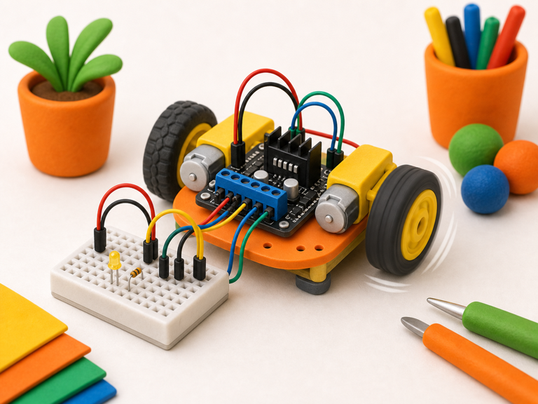
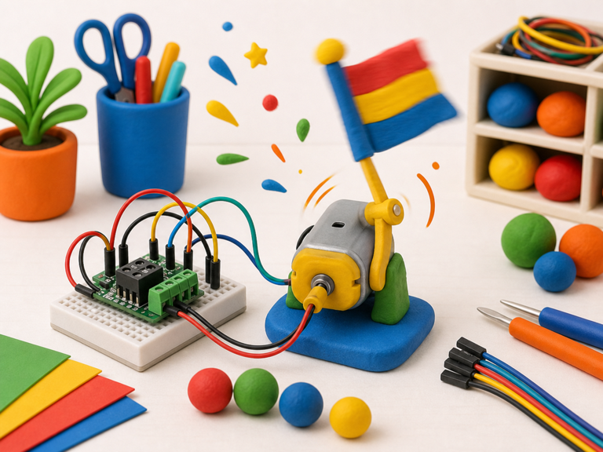

Robot wheel
DetectGo command received
->
DecidePath is clear
->
DoDrive motor forward
A motor driver lets your code safely control a motor.
The driver handles the bigger motor power, while the computer sends small control signals.
Your projects can use motors to move wheels, fans, arms, signs, and tiny machines.


from gpiozero import Motor
motor = Motor(forward=17, backward=18)
motor.forward()from picozero import Motor
motor = Motor(forward=2, backward=3)
motor.forward()motor.forward(), motor.backward(), or motor.stop() after a Detect brick spots something.